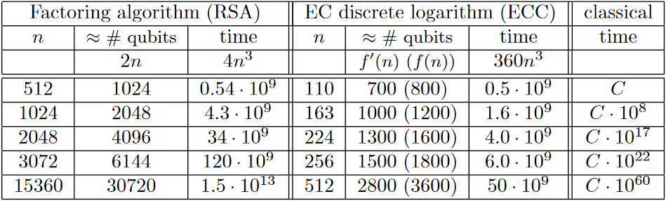

Supersingular isogeny Diffie-Hellman 101
Craig Costello, Patrick Longa and Michael Naehrig, three cryptographers at Microsoft Research, recently published a paper on supersingular isogeny Diffie-Hellman. This paper garnered a lot of interest in the security community and even made it to the front page of Hacker News. Most of the discussion around it seemed to be how no-one understands isogenies, even within cryptography-literate communities. This article aims to give you a high-level understanding of what this cryptosystem is and why it works.
This post assumes that you already know how Diffie-Hellman works in the abstract, and that you know elliptic curves are a mathematical construct that you can use to perform Diffie-Hellman operations, just like you can with the integers mod p (that would be "regular" Diffie-Hellman). If that was gibberish to you and you'd like to know more, check out Crypto 101, my free introductory book on cryptography. You don't need a math background to understand those concepts at a high level. The main difference is that Crypto 101 sticks to production cryptography, while this is still experimental.
It's not surprising that isogeny-based cryptography is so confusing. Up until recently, it was unambiguously in the realm of research, not even close to being practically applicable. Its mathematical underpinnings are much more complex than regular elliptic curves, let alone integers mod p. It also looks superficially similar to elliptic curve Diffie-Hellman, which only adds to the confusion.
With that, let's begin!
What is this paper about?
Supersingular isogeny Diffie-Hellman (SIDH) is one of a handful of "post-quantum" cryptosystems. Those are cryptosystems that will remain secure even if the attacker has access to a large quantum computer. This has nothing to do with quantum cryptography, like quantum key distribution, beyond their shared quantum mechanical underpinning.
Why should I care about quantum computers?
General quantum computers can solve different problems than classical computers can. Classical computers can emulate quantum computers, but only with exponential slowdown. A sufficiently large quantum computer could break most production cryptography, including cryptosystems based on the difficulty of factoring large numbers (like RSA), taking discrete logs over the integers mod p (like regular DH), or taking discrete logs over elliptic curves (like ECDH and ECDSA). To quantify that, consider the following table:

In this table, n refers to the modulus size for RSA, and the field size for ECC. Look at the rightmost column, which represents time taken by the classical algorithm, and compare it to the "time" columns, which represent how much a quantum computer would take. As n increases, the amount of time the quantum computer would take stays in the same ballpark, whereas for a classical computer it increases (almost) exponentially. Therefore, increasing n is an effective strategy for keeping up with ever-faster classical computers, but it is ineffective at increasing the run time for a quantum computer.
Aah! Why isn't everyone panicking about this?!
The good news is that these computers don't exist yet.
If you look at the qubits column, you'll see that these attacks require large universal quantum computers. The state of the art in those only has a handful of qubits. In 2011, IBM successfully factored 143 using a 4-qubit quantum computer. Scaling the number of qubits up is troublesome. In that light, larger key sizes may prove effective after all; we simply don't know yet how hard it is to build quantum computers that big.
D-wave, a quantum computing company, has produced computers with 128 and 512 qubits and even >1000 qubits. While there is some discussion if D-waves provide quantum speedup or are even real quantum computers at all; there is no discussion that they are not universal quantum computers. Specifically, they only claim to solve one particular problem called quantum annealing. The 1000 qubit D-Wave 2X can not factor RSA moduli of ~512 bits or solve discrete logs on curves of ~120 bits.
The systems at risk implement asymmetric encryption, signatures, and Diffie-Hellman key exchanges. That's no accident: all post-quantum alternatives are asymmetric algorithms. Post-quantum secure symmetric cryptography is easier: we can just use bigger key sizes, which are still small enough to be practical and result in fast primitives. Quantum computers simply halve the security level, so all we need to do to maintain a 128 bit security level is to use ciphers with 256 bit keys, like Salsa20.
Quantum computers also have an advantage against SIDH, but both are still exponential in the field size. The SIDH scheme in the new paper has 192 bits of security against a classical attacker, but still has 128 bits of security against a quantum attacker. That's in the same ballpark as most symmetric cryptography, and better than the 2048-bit RSA certificates that underpin the security of the Internet.
What makes this paper special?
Post-quantum cryptography has been firmly in the realm of academic research and experiments. This paper makes significant advancements in how practically applicable SIDH is.
Being future-proof sounds good. If this makes it practical, why don't we start using it right now?
SIDH is a young cryptosystem in a young field, and hasn't had the same level of scrutiny as some of the other post-quantum cryptosystems, let alone the "regular" cryptosystems we use daily. Attacks only get better, they never get worse. It's possible that SIDH is insecure and we just don't know how to break it yet. It does have a good argument for why quantum algorithms wouldn't be able to crack it (more on that later), but that's a hypothesis, not a proof.
The new performance figures from this paper are impressive, but this system is still much slower than the ones we use today. Key generation and key exchange take a good 50 million cycles or so each. That's about a thousand times slower than Curve25519, a curve designed about 10 years ago. Key sizes are also much larger: SIDH public keys are 751 bytes, whereas Curve25519 keys are only 32 bytes. For on-line protocols like HTTPS operating over TCP, that's a significant cost.
Finally, there are issues with implementing SIDH safely. Systems like Diffie-Hellman over integers mod p are much less complex than elliptic curve Diffie-Hellman (ECDH), let alone SIDH. With ECDH and ECC in general, we've seen new implementation difficulties, especially with early curves. Point addition formulas would work, unless you were adding a point to itself. You have to check that input points are on the curve, or leak the secret key modulo some small order. These are real implementation problems, even though we know how to solve them.
This is nothing compared to the difficulties implementing SIDH. Currently, SIDH security arguments rely on honest peers. A peer that gives you a pathological input can utterly break the security of the scheme. To make matters worse, while we understand how to solve these problems for elliptic curve Diffie-Hellman, we don't have a way to verify inputs for isogeny-based cryptography at all. We don't have much research to fall back on here either. This isn't a SIDH-specific problem; post-quantum cryptography isn't mature enough yet to have implementation issues like these nailed down yet. (For an example from lattice-based cryptography, see the recent paper by Bindel et al.)
I don't want to diminish the importance of this paper in any way! Just because it's not something that your browser is going to be doing tomorrow doesn't mean it's not an impressive accomplishment. It's just a step on the path that might lead to production crypto one day.
OK, fine. Why is this so different from elliptic curve Diffie-Hellman?
While SIDH and ECDH both use elliptic curves, they're different beasts. SIDH generates new curves to perform a DH exchange, whereas ECDH uses points on one fixed curve. These supersingular curves also have different properties from regular curves. Using a supersingular curve for regular elliptic curve operations would be horribly insecure. If you have some background in elliptic curves: supersingular curves have a tiny embedding degree, meaning that solving the ECDLP can easily be transformed into a (solvable) DLP. Most curves have large embedding degrees; you generally have to go out of your way to find a curve with a small embedding degree. That is only done in specialized systems, like for pairing-based cryptography, or, as in this case, supersingular isogeny-based Diffie-Hellman.
Let's recap ECDH. Public keys are points on a curve, and secret keys are numbers. Alice and Bob agree on the parameters of the exchange ahead of time, such as the curve E and a generator point P on that curve. Alice picks a secret integer a and computes her public key aP. Bob picks a secret integer b and computes his public key bP. Alice and Bob send each other their public keys, and multiply their secret key by the other peer's public key. Since abP = baP, they compute the same secret. Since an attacker has neither secret key, they can't compute the shared secret.
SIDH is different. Secret keys are isogenies...
Whoa whoa whoa. What the heck are isogenies?
An isogeny between elliptic curves is a function from one elliptic curve to
another that preserves base points. That means it takes points on one curve
and returns points on the other curve. Every point on the input curve will map
to a point on the output curve; but multiple points may map to the same
point. Formally speaking, the isogeny is surjective. This is equivalent to
saying that an isogeny phi is just a map between two curves E1, E2 for
which:
phi(P + Q) = phi(P) + phi(Q)
... for all P's and Q's.
We have a bunch of formulas for generating isogenies from a curve and a point. You might remember that the kinds of values a function takes is its "domain", and the kinds of values it returns is it's "codomain". The domain of such an isogeny is the curve you give it; its codomain is a new curve.
OK, so explain how SIDH works again.
Roughly speaking, a secret key is an isogeny, and a public key is an elliptic curve. By "mixing" their isogeny with the peer's public curve, each peer generates a secret curve. The two peers will generally generate different curves, but those curves will have the same j-invariant.
Wait, what's a j-invariant?
The j-invariant isn't particularly complicated magic; for a curve in Weierstrass form, it's a simple function of the curve coefficients:
j(E) = (1728 * 4a^3)/(4a^3 + 27b^2)
That's a little magic, but perhaps the best analogy would be the discriminant for quadratic equation you might remember from high school math; it's a single number that tells you something interesting about the underlying curve. The j-invariant has a few cool properties: for example, while this is the formula for the short Weierstrass form, the value of j doesn't change if you put a curve in a different form. Also, all curves with the same j-invariant are isomorphic. However, for SIDH you don't really care about these properties; you just care that the j-invariant is a number you can compute and it'll be the same for the two secret curves that are generated by the DH exchange.
OK, try explaining SIDH again.
The protocol fixes a supersingular curve E and four points on that curve: PA, QA, PB, QB.
Alice picks two random integers, mA and nA. She takes a linear combination of those two integers with PA and QA to produce a random point RA, so:
RA = nA * PA + mA * QA
That random point defines Alice's secret isogeny through the isogeny formulas I talked about above. The codomain of that isogeny forms Alice's public curve. Alice transforms points PB and QB with the isogeny. She sends Bob her public curve, and the two transformed points.
Bob does the same thing, except with A and B swapped.
Once Alice gets Bob's public key, she applies mA and nA again to the corresponding transformed points she got from Bob. She generates a new isogeny phiBA from the resulting point just like she did before to generate her private key. That isogeny's codomain will be an elliptic curve EBA.
When Bob performs his side of the exchange, he'll produce a different isogeny and a different elliptic curve EAB; but it will have the same j-invariant as the curve Alice computed. That j-invariant is the shared key.
I've compiled a transcript of a Diffie-Hellman exchange using Sage so you can see a (toy!) demo in action.
I know a little about elliptic curves. I thought they were always non-singular. What's a supersingular elliptic curve but a contradiction in terms?
You're right! Supersingular elliptic curves are somewhat confusingly named. Supersingular elliptic curves are still elliptic curves, and they are non-singular just like all other elliptic curves. The "supersingular" refers to the singular values of the j-invariant. Equivalently, the Hasse-Witt matrix will be singular as well (and therefore the Hasse invariant will be 0).
So, why does it matter that the curve is supersingular?
Firstly, computing the isogeny is much easier on supersingular curves than on ordinary (not supersingular) elliptic curves. Secondly, if the curve is ordinary, the scheme can be broken in subexponential time by a quantum attacker.
Isogeny-based cryptography using ordinary curves was considered as a post-quantum secure cryptosystem before SIDH. However, Childs et al. showed a subexponential quantum algorithm in 2010. This paper appeared to have ended isogeny-based cryptography: it was already slower than other post-quantum systems, and now it was shown that it wasn't even post-quantum secure.
Because supersingular curves are rare, they had not previously been considered for isogeny-based cryptography. However, the paper itself suggested that supersingular curves might be worth examining, so it ended up pushing research in a new direction rather than ending it.
Explaining why the supersingular curve makes the problem quantum-hard is tricky without being thoroughly familiar with isogenies and quantum computing. If you're really interested, the Childs paper explains how the quantum attack in the ordinary case works. Informally, in the ordinary case, there is a group action (the isogeny star operator) of the ideal class group onto the set of isomorphism classes of isogenous curves with the same endomorphism ring. That can be shown to be a special case of the abelian group hidden shift problem, which can be solved quickly on a quantum computer. In the supersingular case, there is no such group action to exploit. (If you're trying to solve for this at home; this is why SIDH needs to define the 4 points PA, PB, QA, QB.)
I would like to thank Thomas Ptacek for reviewing this blog post and bearing with me as I struggle through trying to come up with human-readable explanations for all of this stuff; and Sean Devlin for reminding me that Sage is an excellent educational tool.